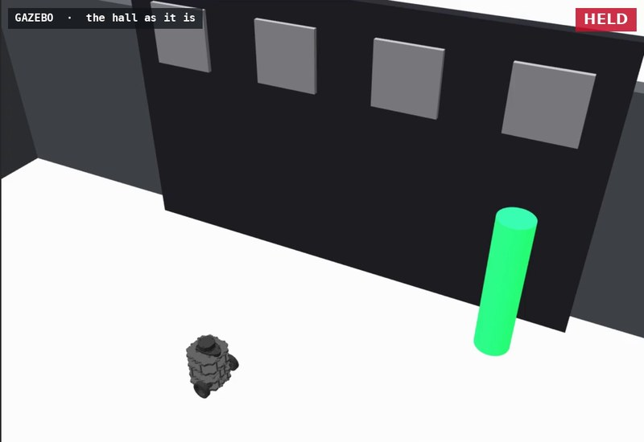
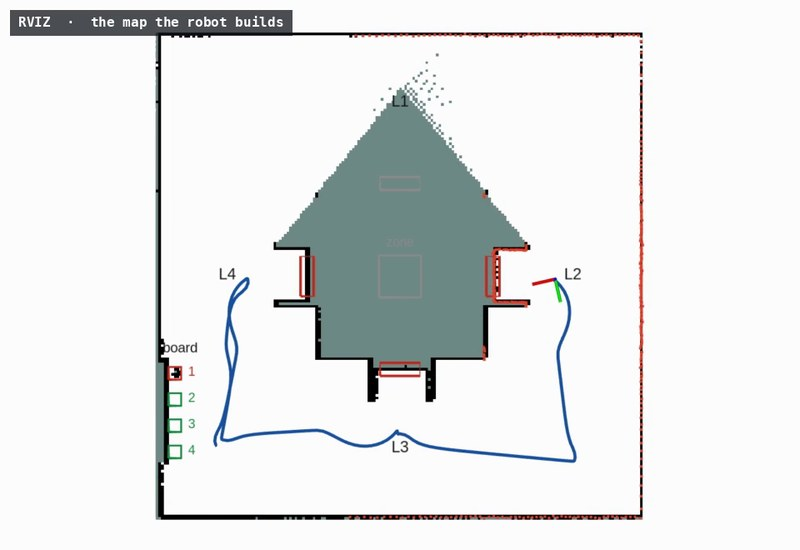
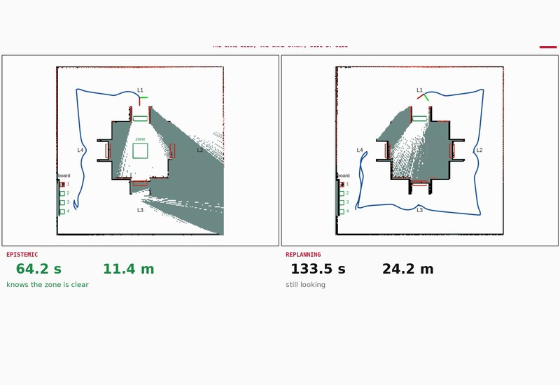
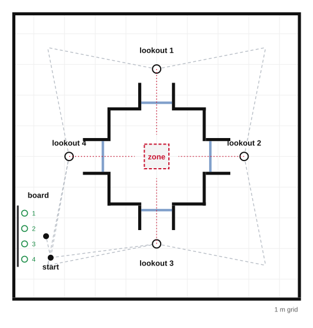

Information gathering · knowing whether · epistemic against classical · one robot · ROS 2
A robot must find out whether a zone is blocked. It can see the zone through four windows, one from each of four lookouts around the room the zone is in, but a screen closes every window except one, and the robot does not know which. Beside its start stands a status board: slot \(k\) is lit exactly when the view from lookout \(k\) is clear. Nothing in the robot's goal mentions the board.
The epistemic planner is asked for \(\mathit{Kw}_{r1}\,\mathit{blocked}\text{-}z\) and returns a policy whose first move is to the board. It reads slots until one is lit, drives to that lookout and looks; if slots 1, 2 and 3 are dark it goes to lookout 4 without reading slot 4, since exactly one view is clear. The classical planner, POPF[3], is given every action the epistemic one has, the board included, drives timed from the robot's own roadmap, looks that end the moment the map decides, and a loop that replans after every look. It never reads the board, and the propositions below show that no classical planner of the usual kinds would: reading it achieves nothing except knowledge.
Every formulation ends knowing, and the map the robot built backs it in every run; what differs is how far the robot drives to get there. The classical side is at its strongest: POPF replanning from the nearest lookout not yet found screened, and the shortest conformant tour, not POPF's own longer one. 32 seeds, every world four times, each under all three formulations from the same start.
Package lookout_board_demo; policy from eplansys, search by Aletheia, classical plans by POPF through PlanSys2. Full account in The Lookout Board (PDF): the domain, the propositions and their proofs, the distances, the planning cost as the lookouts grow, the batch and the defects found on the way.
The runs
| take | world | read the board | looked from | reports | time | driven | the zone, on the map |
|---|---|---|---|---|---|---|---|
| epistemic policy, seed 1 | lookout 1 open, zone clear | yes | l1 | SUCCESS | 64.2 s | 11.4 m | clear |
| classical replanning, seed 1 | lookout 1 open, zone clear | no | l4, l3, l2, l1 | SUCCESS | 136.4 s | 24.6 m | clear |
| conformant tour, seed 1 | lookout 1 open, zone clear | no | l4, l3, l2, l1 | SUCCESS | 135.8 s | 24.6 m | clear |
| epistemic policy, seed 8 | lookout 4 open, zone blocked | yes | l4 | SUCCESS | 30.1 s | 4.2 m | blocked |
| action | what the run reported | model after |
|---|---|---|
| plan | a policy of 12 nodes, branching, in 0.31 s | 8 worlds, 8 designated |
| goto-board(r1) | to the board, 0.6 to 4.0 s | |
| read-1(r1) | slot 1 read lit; observed e-read1-lit, 4.0 to 5.8 s | 8 worlds, 2 designated |
| goto-l1(r1) | to lookout 1, 5.8 to 62.7 s | |
| look-1(r1) | the zone read clear; observed e-look1-free, 62.8 to 64.2 s | 2 worlds, 1 designated |
| goal | \(\mathit{Kw}_{r1}\,\mathit{blocked}\text{-}z\) holds, and the map backs it; 11.4 m driven |
| action | what the run reported | found |
|---|---|---|
| plan 1 | from start, with nothing found screened: goto r1 start l4 ; look_zone r1 l4, in 0.40 s | |
| goto l4 | 0.5 to 17.3 s | |
| look_zone l4 | window reads blocked, 17.3 to 19.9 s | screened |
| plan 2 | from l4, with l4 found screened: goto r1 l4 l3 ; look_zone r1 l3, in 0.52 s | |
| goto l3 | 20.6 to 55.4 s | |
| look_zone l3 | window reads blocked, 55.5 to 58.0 s | screened |
| plan 3 | from l3, with l4, l3 found screened: goto r1 l3 l2 ; look_zone r1 l2, in 0.50 s | |
| goto l2 | 58.7 to 95.1 s | |
| look_zone l2 | window reads blocked, 95.1 to 97.7 s | screened |
| plan 4 | from l2, with l4, l3, l2 found screened: goto r1 l2 l1 ; look_zone r1 l1, in 0.50 s | |
| goto l1 | 98.3 to 135.0 s | |
| look_zone l1 | map reads it clear, 135.0 to 136.4 s | the zone known |
| end | the mission reports SUCCESS, the map reading the zone clear; 24.6 m driven |
What the runs show

The policy Information gathering selected by the planner The goal is to know whether the zone is blocked. The planner's first move is to a board that cannot tell it, because of what the robot will know after reading it: which lookout to drive to. See the policy →
Classical planning The board is not read under classical planning Over the classical model, under any determinization of the outcomes, and under hindsight sampling, reading the board is worth nothing. The strongest replanner tours the room. See the propositions →
Evaluation Worst-case mission time halved Every run of every formulation knew the zone in the end. The policy averaged 48 s against 77 s for replanning, and 67 s at worst against 137 s. See the evaluation →Environment
The hall is 9.2 by 9.2 m. The zone, a 0.8 m square, stands in the middle of a walled room with a window in each wall. Each window opens onto an embrasure, a channel 0.8 m deep between two side walls, and lookout \(k\) stands in front of embrasure \(k\): the zone can be seen through a window only from in front of it, and a robot passing along the corridor sees the embrasure's walls and nothing of the room. A screen, when it stands, closes its window from inside the embrasure. The board is a panel against the west wall with four slots before it; a lit slot has a glowing post standing in it, which the laser sees. In the blocked worlds a crate stands in the zone.

The robot is a TurtleBot3 Burger with its laser's range set to 8 m, since the LDS-01's 3.5 m does not reach across the room, mapping with slam_toolbox as it drives. Before any simulator run, a ray-casting check confirms in all eight worlds that from lookout \(k\) the zone is decided exactly when its view is clear, that the window reads blocked exactly when it is not, that the board's lit slot reads blocked and the other three clear, and that no route the robot drives decides the zone in passing.
The domain
| action | kind | precondition | outcomes |
|---|---|---|---|
| goto-board, goto-l\(k\) | public ontic | not already there | there, and nowhere else |
| read-\(k\) | sensing | at the board | slot \(k\) lit or dark: \(\mathit{Kw}_{r1}\,\mathit{clear}\text{-}k\) |
| check-\(k\) | sensing | at lookout \(k\) | the view screened or clear: \(\mathit{Kw}_{r1}\,\mathit{clear}\text{-}k\) |
| look-\(k\) | sensing | at lookout \(k\), and \(K_{r1}\,\mathit{clear}\text{-}k\) | the zone blocked or free: \(\mathit{Kw}_{r1}\,\mathit{blocked}\text{-}z\) |
The actions are event models of dynamic epistemic logic[1], planned over as in[2]. Eight worlds, all designated: which of the four views is clear, exactly one being so, and whether the zone is blocked. The goal is \(\mathit{Kw}_{r1}\,\mathit{blocked}\text{-}z\), knowing whether[4]. As on the two lookouts[6], a look needs the robot to know its view is clear, and there are two ways to come to know it: at the lookout itself, by checking, or at the board, for any lookout at all. Which is better is not in the goal or in any precondition; it is in what the robot will know after each, and only a planner over states of knowledge can compare them. The domain is written by tools/make_domain.py for any number of lookouts.
The policy
goto-board
read-1 lit → goto-l1, look-1
dark → read-2 lit → goto-l2, look-2
dark → read-3 lit → goto-l3, look-3
dark → goto-l4, look-4
Aletheia returns this policy by AO* in 20 050 expansions, and its validator checks all eight leaves. It drives to exactly one lookout, the open one, and its longest branch has six actions, against eight for checking the lookouts in turn. After three dark slots it does not read the fourth: exactly one view is clear, so \(K_{r1}\,\mathit{clear}\text{-}4\) holds by elimination.
There is no sequence that does the same. A sequence that reached the goal in every world would contain a look, and the first look's precondition, \(K_{r1}\,\mathit{clear}\text{-}k\), would have to hold in the worlds where view \(k\) is screened, where it is false since what is known is true. Aletheia's GBFS, which returns sequences, exhausts its search and finds none.
Classical planning
Over the classical model. In the model the classical planner is given, reading a slot achieves nothing any precondition or goal uses, so a plan without it is valid and shorter. Over the batch POPF returned 80 plans to the replanner, and none read the board.
Over a model of knowledge, determinized. Compile knowledge into the classical problem, as conformant and contingent planners do[5], and a look needs a fluent for the view being known clear, which reading slot \(k\) lit or checking view \(k\) clear achieve. A classical planner must still choose each sensing outcome to plan a sequence; under FF-Replan's all-outcomes determinization[7] it may choose them all. The board is a spur off the start, so any route through it is longer than the route to the same lookout by at least twice the spur, and the cheapest plan checks the view where it stands.
Under hindsight. Hindsight optimisation[8] samples worlds and values each action by the best plan in each sample, as though the sample were known. In a known world sensing changes nothing and costs time, so reading the board is worth less than not reading it.
A planner that does read the board has to value what the robot will know after reading it, in each of the worlds it cannot yet tell apart. That is a planner over states of knowledge.
Route lengths
The roadmap's shortest routes give each formulation's drive in each world before any robot moves, in metres:
| open lookout | 1 | 2 | 3 | 4 | mean | worst |
|---|---|---|---|---|---|---|
| policy: board, then the open lookout | 12.03 | 12.15 | 4.92 | 4.79 | 8.47 | 12.15 |
| replanning: 4, 3, 2, 1 until open | 24.66 | 17.42 | 10.18 | 3.35 | 13.91 | 24.66 |
| conformant: the tour 4, 3, 2, 1 | 24.66 | 24.66 | 24.66 | 24.66 | 24.66 | 24.66 |
The replanner's order is POPF's: the nearest lookout by route time, lookout 4, then from each failure the nearest not yet tried. The tour is the shortest of the twenty-four orders; POPF's own tour for the same goal took 193 s of driving against 155 s, and the baseline is given the shorter. The policy pays 1.44 m for the board in every world and is beaten only where the open lookout is the replanner's first.
Planning cost
| lookouts | worlds | actions | strategy | depth (board / in turn) | first move | expansions | seconds |
|---|---|---|---|---|---|---|---|
| 2 | 4 | 9 | AO* | 4 (4 / 4) | lookout 1 | 58 | 0.00 |
| 3 | 6 | 13 | AO* | 5 (5 / 6) | the board | 1 497 | 0.01 |
| 4 | 8 | 17 | AO* | 6 (6 / 8) | the board | 20 050 | 0.14 |
| 5 | 10 | 21 | AO* | 7 (7 / 10) | the board | 318 380 | 2.48 |
| 6 | 12 | 25 | replan | 12 (8 / 12) | lookout 1 | 17 | 5.00 |
| 6 | 12 | 25 | AO* alone | 8 (8 / 12) | the board | 5 832 186 | 46.97 |
| 7 | 14 | 29 | replan | 14 (9 / 14) | lookout 1 | 20 | 5.00 |
| 7 | 14 | 29 | AO* alone: no policy within the budget | 900 | |||
| 8 | 16 | 33 | replan | 16 (10 / 16) | lookout 1 | 23 | 5.00 |
With three to five lookouts, AO*, which Aletheia's selection policy picks, returns the policy that reads the board, of depth \(n + 2\), against \(2n\) for checking the lookouts in turn; with two the depths tie and it checks. Its search grows by an order of magnitude per lookout. From six lookouts the selection policy gives AO* a few seconds and then falls back on replanning, which determinizes the sensing outcomes and returns the policy that checks the lookouts in turn, of depth \(2n\): the classical planner's policy, and it does not read the board, as a determinizing planner never does. Given the whole budget alone, AO* finds the board-first policy for six lookouts in 47 s and 5.8 million expansions, and for seven does not finish in 900 s. Reading the board is what a planner over states of knowledge finds; finding it is what such a planner pays for.
Evaluation
Each seed fixes the world and the start, perturbed by up to 0.1 m and 10°, and is run under the three formulations side by side. Times are simulated seconds from the order to the end of the mission; distances come from the simulator's odometry.
| backed by the map | read the board | lookouts stood at | mean time | worst time | mean driven | worst driven | |
|---|---|---|---|---|---|---|---|
| epistemic policy | 32/32 | 32/32 | 1.00 (at most 1) | 48.0 s | 66.6 s | 8.1 m | 12.0 m |
| classical replanning | 32/32 | 0/32 | 2.50 (at most 4) | 77.4 s | 137.1 s | 13.9 m | 24.8 m |
| conformant tour | 32/32 | 0/32 | 4.00 (at most 4) | 134.0 s | 137.4 s | 24.6 m | 24.9 m |
| world | epistemic | replanning | conformant |
|---|---|---|---|
| lookout 1, zone clear | 64.5 s · 11.4 m | 136.4 s · 24.6 m | 135.1 s · 24.6 m |
| lookout 1, zone blocked | 63.9 s · 11.4 m | 136.3 s · 24.6 m | 134.8 s · 24.7 m |
| lookout 2, zone clear | 66.0 s · 11.8 m | 97.1 s · 17.4 m | 134.8 s · 24.7 m |
| lookout 2, zone blocked | 65.2 s · 11.7 m | 97.3 s · 17.5 m | 134.6 s · 24.7 m |
| lookout 3, zone clear | 32.2 s · 4.7 m | 57.3 s · 10.2 m | 135.3 s · 24.6 m |
| lookout 3, zone blocked | 30.9 s · 4.7 m | 56.5 s · 10.1 m | 133.0 s · 24.6 m |
| lookout 4, zone clear | 31.1 s · 4.3 m | 19.3 s · 3.5 m | 132.6 s · 24.7 m |
| lookout 4, zone blocked | 30.8 s · 4.3 m | 18.4 s · 3.4 m | 131.0 s · 24.6 m |
Every run of every formulation ended knowing the zone, and the map backed it in all 96. The policy read the board in all 32 of its runs; neither classical formulation read it once. Paired by seed against classical replanning, the policy was faster in 24 seeds and slower in 8 (sign test \(p = 0.007\)), with a Hodges–Lehmann estimate of 29.6 s and 5.6 m saved; it was slower only where the open lookout is the replanner's first, by at most 12.7 s. Against the conformant tour it was faster in 32 of 32, by 86.0 s.
Found on the way
Limits
References
Reproduction
bash tools/validate.sh # views, policy, no sequence, POPF; no simulator python3 tools/make_world.py --seed 1 --out RUN ros2 launch lookout_board_demo lookout_board_launch.py dir:=RUN formulation:=epistemic # or replan, conformant bash tools/batch.sh 1 32 BATCH 2 # every seed under all three, side by side python3 tools/analyse.py BATCH # runs.csv and the paired comparison python3 tools/scaling.py --lookouts 2 3 4 5 6 7 8 --out scaling.json